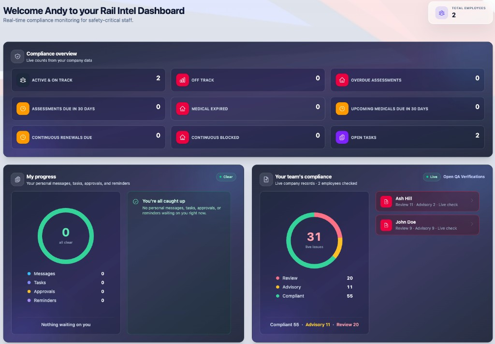
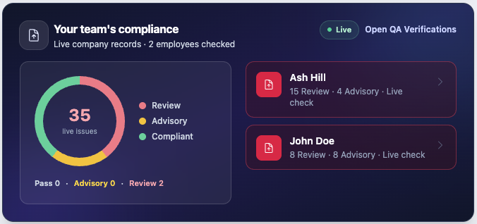

Secure competency management for rail
The most advanced and automated Competency Management System for Rail.
Rail Intel gives operators live visibility of competencies, medicals, licences and assessments — so expired skills never reach the railway.
- Live expiry alerts
- Audit-ready evidence
- 14-day module trials
-
Live compliance
On-track, off-track and due-soon in one dashboard.
-
Safe to work
Mandatory expiry flags before anyone signs on.
-
QA verification
Company-wide checks across every module.
-
Built for rail
Roles, routes, traction, PTS and driver cycles.
Dashboard
One dashboard for the whole operation.
Stop chasing spreadsheets. See the state of the railway’s people the moment you log in.
- Live counts for on-track, off-track, overdue assessments and medicals — from your company data, not a weekly export.
- Open any person and drill into team compliance, incidents and QA in a click.
- Personal progress and team status in one place, ready for the shift briefing.

QA Verifications
Verify one driver, every reportee, or a percentage of the company.
A verification reads the live record — cycles, medicals, licence, cab passes, experience, training, assessment events and incidents — and scores every check it runs. Use it on one person before they sign on, across your whole team, or as a spot-check sample.
-
01
One employee
Run a verification from any record and get a sectioned report back in seconds, saved straight to that person’s history.
-
02
Every reportee
One action on your dashboard verifies everyone who lists you as their assessing manager, and stores a full report for each.
-
03
A percentage sample
Audit-style spot checks across the company: run a random sample from 5% upwards, or 100% to cover everybody.
Every check scored, every run kept
Each check returns one of four outcomes, and the run reports the share that came back compliant alongside the pass rate across the people you verified.
- Compliant
- Advisory
- Review
- N/A
Runs are retained with the date and who ran them, so a verification you did months ago is still there to open, print and hand over. You choose which sections are examined and how strictly, from the check configuration.

Live on the dashboard
Gaps show up before anyone asks for a report.
Your team’s compliance sits on the dashboard and is worked out from the records as they stand right now — not from the last time somebody remembered to run a report. Anyone carrying a review or advisory item is listed with their counts, and when there is nothing outstanding it says so.
From there it is one click into the full QA Verifications page, or one action to re-run every reportee.

Competency engine
Build cycles. Assess in the field. Never miss an expiry.
Competency is not a document store. It is a live cycle with a start date, an expiry, and evidence.
- Start from a ready-made framework or build a custom cycle in four steps — method, details, criteria, events.
- Assign live cycles and surface not safe to work the moment a mandatory competency lapses.
- Assess against structured criteria, attach files and photos, and keep saving even if the signal drops.

Workforce records
Every licence, medical and qualification on one record.
If it has an expiry date, it belongs on the person — not in a shared drive.
- Store train driving licences, categories and competence certificates with a clear audit trail.
- Track ORR medicals and occupational health so expired medicals never slip through.
- Training, qualifications and leave sit alongside the same employee — not in another spreadsheet.

Safety operations
Incidents, plans and cab passes — linked to the person.
When something happens on the railway, the record should already know who was involved.
- Log and allocate incidents, then raise CDPs and performance support plans from the same record.
- Issue and track cab passes with a clear colour status.
- Safety briefs stay attached to the people who signed them — ready when you need to prove it.

Routes and hours
Traction, routes and hours that prove competence.
Route knowledge and hours on type are not optional extras. They are part of the same compliance picture.
- Configure traction types, routes and depots to match how your railway actually runs.
- Record trainee hours, encounters and manager hours against progress — not a separate logbook.

Assurance
Verify the whole company. Configure it once.
QA should not wait for an audit week. Run verification whenever you need the truth.
- Run QA across licences, medicals, cycles, incidents and more — then see compliant, advisory and review at a glance.
- Set organisation structure, role permissions and company standards so the platform matches your operation.
- Tasks and employee messaging keep follow-ups inside the system, not in a side inbox.
How it works
Stand up the platform once. Then run the railway with live compliance.
Configure your company
Roles, standards, traction, routes and cycle templates — set up once to match how you already work.
Assign and record
Put people on cycles. Capture assessments, medicals, licences and hours as the work happens.
Monitor and verify
Watch live compliance and run QA verifications before anyone is unsafe to work.
Why Rail Intel
Built for safety-critical rail — not generic HR.
-
Expiry alerts that matter
Competencies, medicals and licences with due-soon and overdue in one place. Never miss a renewal.
-
Audit-ready records
Verification history, evidence on assessments, and exports for reviews, tenders and the regulator.
-
Built for rail
Driver cycles, PTS, traction, routes, cab passes and safety briefs — not a generic HR tool.
-
Team and roles
Organise people by role and depot. Control who sees what with company permissions.
-
Live reporting
Incidents, monitoring, safety briefs and compliance rates on one analytics view.
-
Secure access
Company codes, logged access and role-based permissions. Only the right people see what they need.
Put your competency data to work.
Sign in to Rail Intel and see who is safe to work — live.
Open Rail Intel